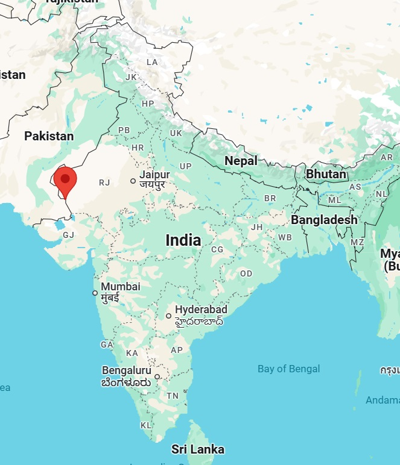
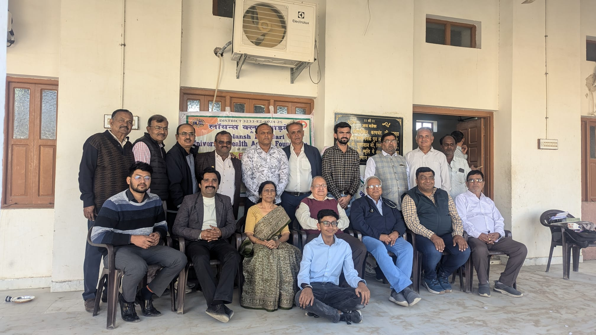
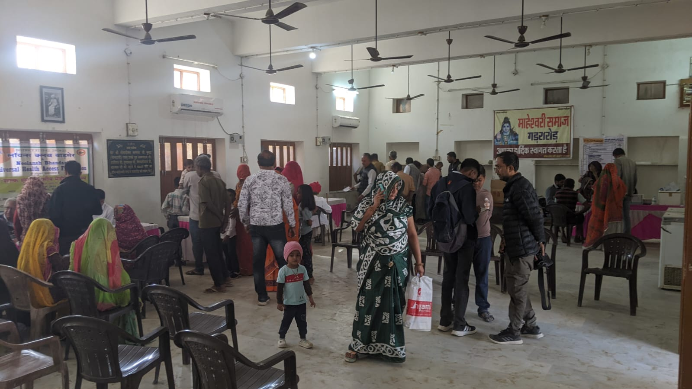
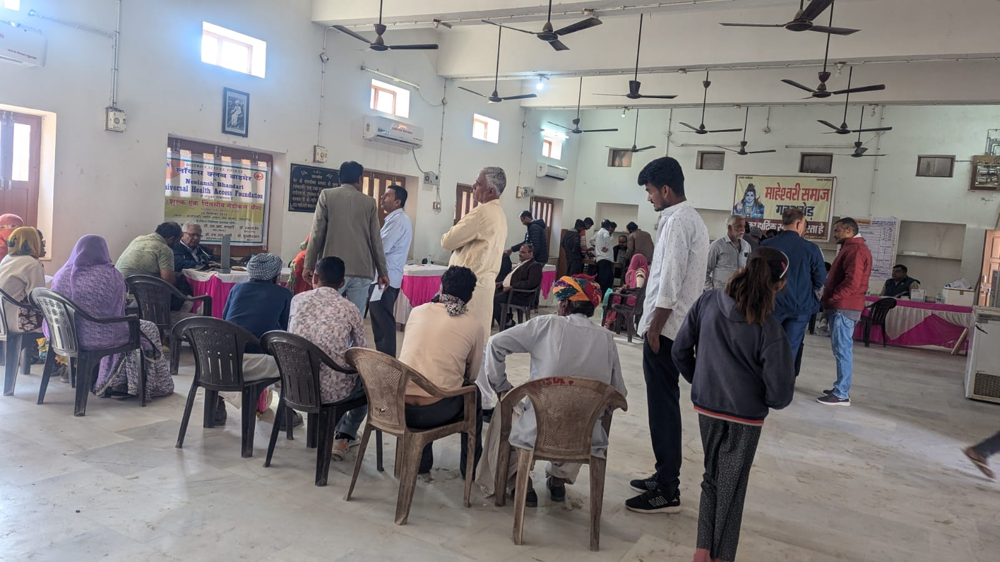
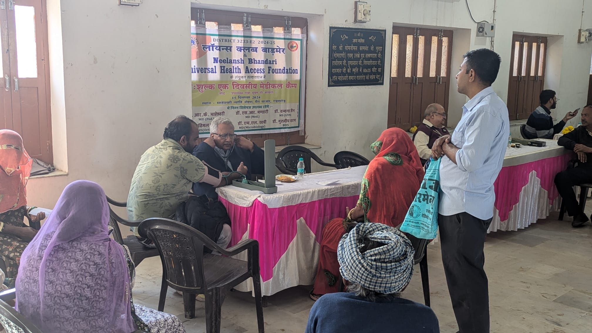
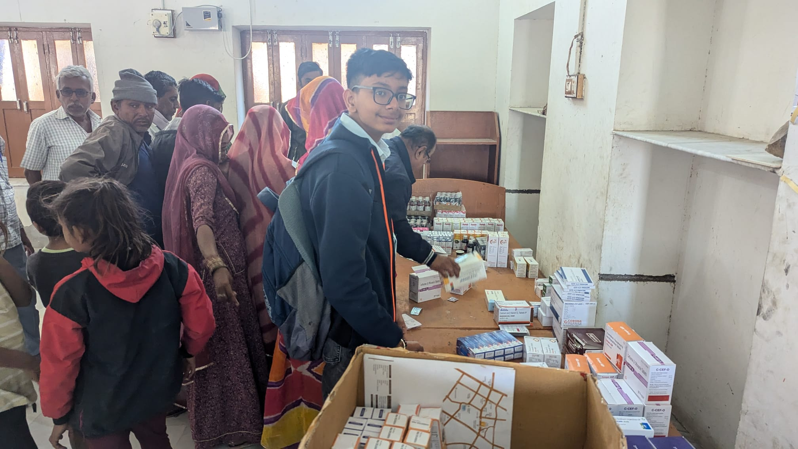
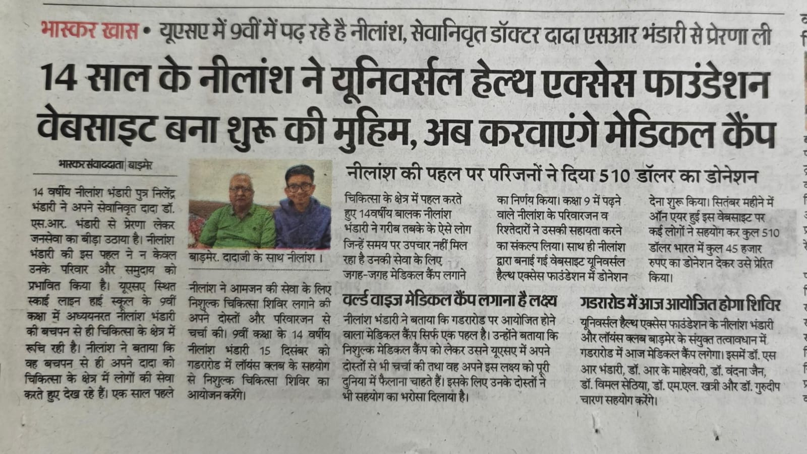
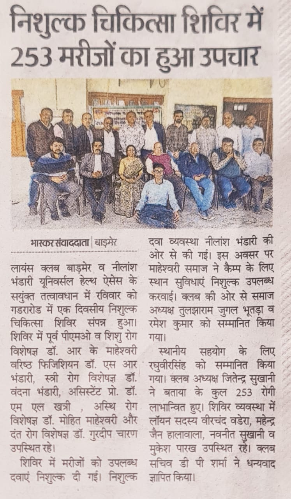

Dec 15, 2024
A medical camp in a remote village on India's western border on Dec 15, 2024
Along the western border of India lies Rajasthan. Rajasthan is a massive state where most of the land is a desert. But on this dry expanse, the incredible natives have created a mystical culture, spectacular folklore, and delicious cuisines. And on the westernmost end of this western state, lies the city of Barmer. This city is where my father grew up and I have visited it many times. However, near Barmer, there are many small villages and hamlets, where people have more limited means and are miles away from quality healthcare facilities.
I wanted to be able to play a tiny part in improving the quality of life of people living in these remote parts, and I decided to host a medical camp in the village of Gadra Road in 2024 by bringing a team of experienced medical professionals and free medicines. Many generous souls came forward by donating for the cause which helped cover the expenses. On-site, I teamed up with the local chapter of the amazing Lion's Club, and the Maheshwari Samaj, who kindly provided us with their community's premises and made other arrangements such as food for the visiting doctors. Together, we were able to provide quality medical care to the people in and around this village.
This camp benefited more than 250 people who needed medical care but were unable to access it for various personal, logistical, or financial reasons. Jaswadan, a 78-year old man, is one such beneficiary. He lives in a hamlet near Gadra Road. He and his extended family are supported by his son who is a construction laborer. Jaswadan had been suffering from severe pain in the neck for over 3 months and had trouble sleeping. He was unable to afford the 100 rupees bus ride to the city of Barmer, where high-quality medical care is available. He told us he was thankful for the medical camp and wished that such events could be conducted more frequently to benefit others like himself.
Himanshu is a 15-year old boy who has lived his entire life in Gadra Road. He dreams of becoming an IPS (Indian Police Service) officer. He had been having severe headaches continuously over the course of 2 months and had gone to the local hospitals but could not get cured. Our doctors were able to examine him and offer medicinal help.
This event was an eye-opening experience for me. I was able to see first-hand the challenges people in the remotest parts of the world still face in getting access to state-of-the-art healthcare and specialist doctors. I learnt from their life experiences, understood their hopes and struggles, which made me feel deeply humbled.
I would like to thank the doctors who carved out time from their busy schedules; Dr. R. K. Maheshwari (pediatrician), Dr. Mohit Maheshwari (orthopedic), Dr. S. R. Bhandari (general practitioner), Dr. M. L. Khatri (pathologist), Dr. Vandana Jain (gynaecologist), and Dr. Gurdeep Charan (dentist). There are many others such as Mr. Jitendra Sukhani (logistics) and Mr. Om Prakash (photographer) who played a key role in organizing this event. And of course, this wouldn't have been possible without the generous donations from all around. I am grateful to you all and thank you from the bottom of my heart.








Contact me at uhaf.nonprofit@gmail.com to donate to future campaigns.
Universal Health Access Foundation is an official 501(c)(3) nonprofit organization.